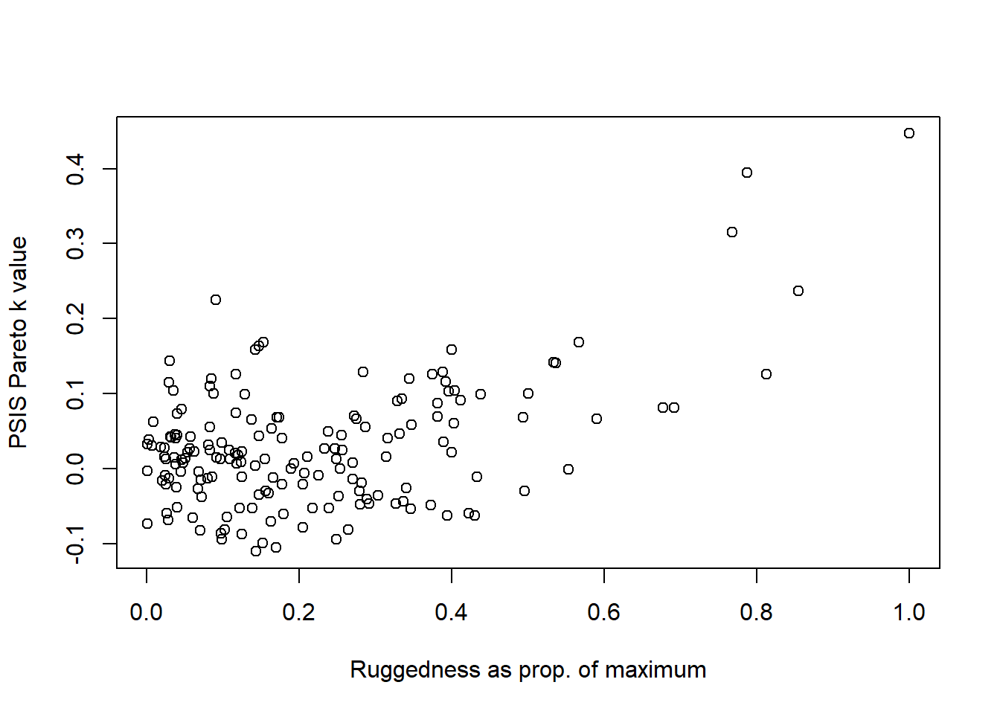
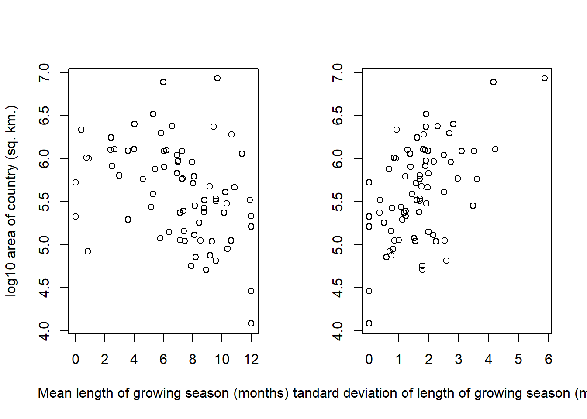
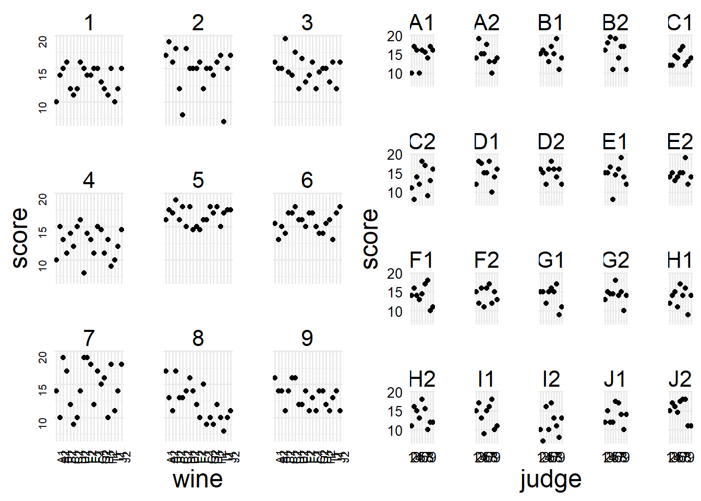
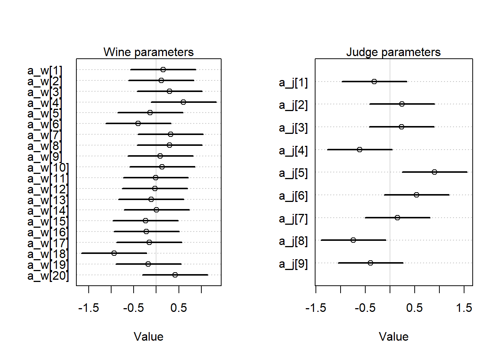

library(rethinking)
library(dagitty)
library(ggplot2)This chapter is a brief introduction to the concept of conditional inference, focusing on the specific concept of linear interaction in models.
Chapter notes
- Bullet holes in bombers and propeller scars on manatees – both are conditional on survival. This is the motivating example for the chapter.
- An interaction is a statistical method for modeling interdependence between two features of a model.
- Using an interaction term in a model is nearly always better than fitting stratified models.
- In Bayesian models, it’s better to use an index-coding approach and have parameters vary by the level of a categorical variable, rather than using an indicator-coding approach, which makes assigning priors difficult.
- An interaction is also just a slope which is conditional on another effect – the value of one variable modifies the effect of the other.
- Linear interactions are symmetrical. If variable \(x\) interacts with variable \(y\), then \(y\) interacts with \(x\). “There is just no way to specify a simple, linear interaction in which you can say the effect of some variable \(x\) depends on \(z\), but the effect of \(z\) does not depend upon \(x\).”
- Continuous interactions are harder to think about as conditional slopes, because we would need an uncountably infinite number of categories. Instead, we can think about interactions as nested linear models.
\[ \begin{aligned} \mu_i &= \alpha + \gamma_{W,i}W_i + \beta_S S_i \\ \gamma_{W,i} &= \beta_{W} + \beta_{WS} S_i \end{aligned} \]
- We could include nested terms for both variables, but the resultant model has unidentifiable parameters – in the final term below, only the sum \((\beta_{WS} + \beta_{SW})\) can be estimated.
\[ \begin{aligned} \mu_i &= \alpha + \gamma_{W,i}W_i + \gamma_{S,i} S_i \\ \gamma_{W,i} &= \beta_{W} + \beta_{WS} S_i \\ \gamma_{S_i} &= \beta_{S} + \beta_{SW} W_i \\ \therefore \mu_i &= \alpha + \left(\beta_{W} + \beta_{WS} S_i\right)W_i + \left(\beta_{S} + \beta_{SW} W_i\right) S_i \\ &= \alpha + \beta_W W_i + \beta_S S_i + (\beta_{WS} + \beta_{SW}) W_iS_i \end{aligned} \]
- The best way to understand interactions is to plot the predictions at multiple levels of the interacting variables.
Exercises
8E1
- Bread dough rises because of yeast and temperature. Yeast amount and temperature interact to determine how much the bread dough rises.
- Education and parents’ education could interact to determine higher income. While people with more education have higher salaries on average, people who are educated and also have educated parents are likely to have even higher average salaries at the same level of individual education.
- Gasoline and pressing the accelerator make the car go. If you never press the accelerator, a full tank won’t do anything.
8E2
Only statement one (Caramelizing onions requires cooking over a low heat and making sure the onions don’t dry out) involves an interaction. Both things must be true simultaneously, whereas the effects are independent of each other in the other statements.
8E3
Of course all of these models only make sense if we have a correct way to quantify those variables.
- \(\text{onion caramelization} = \alpha + \beta_1 \cdot \text{temperature} + \beta_2 \cdot \text{moisture} + \gamma_{12} \cdot \text{temperature} \cdot \text{moisture}\)
- \(\text{car speed} = \alpha + \beta_2 \cdot \text{number of cylinders} + \beta_2 \cdot \text{fuel injector quality}\)
- \(\text{political beliefs} = \alpha + \beta_1 \cdot \text{parental beliefs} + \beta_2 \cdot \text{friend beliefs}\)
- \(\text{intelligence} = \alpha + \beta_1 \cdot \text{sociality} + \beta_2 \cdot \text{manipulable appendages}.\)
8M1
In the tulips example, we saw that water and shade levels interact to affect tulip blooms. Tulips need both water and shade to produce blooms; at a low-light level, the effect of water decreases because no amount of water can replace the lost light. Similarly, if plants have no water, an adequate amount of sunlight will not produce blooms and might even become harmful.
If the hot temperature prevents blooms all together, then the hot temperature would modify the effect of shade, water, and their interaction to all become zero – no amount of shade or water can allow for blooms, and their interaction does not help in this context either.
8M2
The linear model for the tulips example without heat was \[ \mu_i = \alpha + \beta_W W_i + \beta_S S_i + \gamma_{SW} S_iW_i. \]
We can make all of those terms dependent on \(H_i\), the heat treatment, in order to accomplish this.
\[ \mu_i = \alpha_{H[i]} + \beta^{W}_{H[i]} + \beta^S_{H[i]} + \gamma^{SW}_{H[i]} S_iW_i. \]
Now it is possible for these effects to all be zero (or much smaller) if \(H[i] = 1\), and have their normal values if \(H[i] = 0\). Another way to write this model could be something like \[ \begin{aligned} \mu_i &= \lambda_i (1 - H_i) \\ \lambda_i &= \alpha + \beta_W W_i + \beta_S S_i + \gamma_{SW} S_iW_i \end{aligned} \] where \(H_i\) again takes on values of \(0\) (cold) and \(1\) (hot).
8M3
We cannot create a data set where the raven population and wolf population have a linear statistical interaction, because a linear statistical interaction has at least two predictors. Here we only have an outcome (the raven population size) and a predictor (the wolf population size). This is more of an example of a differential equations type problem than a statistical interaction. In this model, the raven population size would have to vary with the wolf population size, and we do not know about the functional form of this effect, so an appropriate model would be something like
\[ \frac{dR}{dt} = f\left(W(t)\right), \] where \(f\) is a function that takes the wolf population size at time \(t\) as an input, and returns the change in the raven population before the next time point.
8M4
We’ll use the sample model for the tulip blooms without heat from the earlier exercise. The priors used in the chapter were
\[ \begin{aligned} \alpha &\sim \text{Normal}(0.5, 0.25) \\ \beta_W &\sim \text{Normal}(0, 0.25) \\ \beta_S &\sim \text{Normal}(0, 0.25) \\ \gamma_{SW} &\sim \text{Normal}(0, 0.25) \\ \end{aligned} \]
We want to use new priors that constrain the effect of water to be positive and the effect of shade to be negative. At this point in the book, the distribution we learned about that has to be positive is lognormal, and we can force the effect of shade to be negative by taking the additive inverse of a lognormal prior. Since we know that having more water increases the effect of light (because if a tulip has plenty of water, getting enough sunshine is the new limiting factor on the blooms), we know that having more water should decrease the effect of shade, so we’ll make the interaction negative as well. Lognormal priors can be hard to calibrate, so we’ll adjust the parameters until the prior predictive simulation looks nice. The priors we’ll use are as follows.
\[ \begin{aligned} \mu_i &= \alpha + \beta_W W_i - \beta_S S_i - \gamma_{SW} S_iW_i \\ \alpha &\sim \text{Normal}(0.5, 0.25) \\ \beta_W &\sim \text{Log-normal}(-3, 1) \\ \beta_S &\sim \text{Log-normal}(-3, 1) \\ \gamma_{SW} &\sim \text{Log-normal}(-3, 1) \end{aligned} \]
set.seed(370)
# Load the data
data(tulips)
d <- tulips
d$blooms_std <- d$blooms / max(d$blooms)
d$water_cent <- d$water - mean(d$water)
d$shade_cent <- d$shade - mean(d$shade)
# Fit the model and extract the prior samples
m_8m4 <- rethinking::quap(
alist(
blooms_std ~ dnorm(mu, sigma),
mu <- a + bw * water_cent - bs * shade_cent - bws * water_cent * shade_cent,
a ~ dnorm(0.5, 0.25),
bw ~ dlnorm(-3, 1),
bs ~ dlnorm(-3, 1),
bws ~ dlnorm(-3, 1),
sigma ~ dexp(1)
),
data = d
)
prior <- rethinking::extract.prior(m_8m4)
# Plot the prpd
par(mfrow = c(1, 3))
for (s in -1:1) {
idx <- which(d$shade_cent == s)
plot(
d$water_cent[idx],
d$blooms_std[idx],
xlim = c(-1, 1),
ylim = c(-0.5, 1.5),
xlab = "water",
ylab = "blooms",
pch = 16,
col = rethinking::rangi2
)
abline(h = 0, lty = 2)
abline(h = 1, lty = 2)
mtext(paste0("shade = ", s))
mu <- rethinking::link(
m_8m4,
data = data.frame(shade_cent = s, water_cent = -1:1),
post = prior
)
for (i in 1:20) lines(-1:1, mu[i, ], col = col.alpha("black", 0.3))
}
I did a few different simulations and ultimately ended up with the prior simulation shown here. The slope priors are regularizing and skeptical, so we think that a smaller effect is more likely a priori – if the effects are large, the data can demonstrate that for us.
8H1
Now we want to add the bed variable to the tulips example, which we’ll denote with \(B_i\). We only want to include the bed effect as a main effect, which means we need to have a different intercept for each bed – so our model will assume that each bed can start at a different baseline, but the effects of water, shade, and their interaction, are homogeneous across the beds. This is probably an OK assumption in the context of a controlled greenhouse setting.
The model will be as follows.
\[ \begin{aligned} y_i &\sim \text{Normal} \left(\mu_i, \sigma\right) \\ \mu_i &= \alpha_{B[i]} + \beta_W W_i - \beta_S S_i - \gamma_{SW} S_iW_i \\ \alpha_{B[i]} &\sim \text{Normal}(0.5, 0.25) \\ \beta_W &\sim \text{Log-normal}(-3, 1) \\ \beta_S &\sim \text{Log-normal}(-3, 1) \\ \gamma_{SW} &\sim \text{Log-normal}(-3, 1) \\ \sigma &\sim \text{Exponential}(1) \end{aligned} \]
That is, we’ll use the same constrained, regularizing priors, as we did for the previous problem, but we’ll have a separate intercept for each bed. In reality, it would probably be good to have the intercept parameters be correlated as well, but we haven’t gone over that in the book yet. Let’s go ahead and fit the model.
set.seed(370)
# For the index coding to work, we need a numeric version of the beds.
d$b <- as.integer(d$bed)
# Fit the model
m_8h1 <- rethinking::quap(
alist(
blooms_std ~ dnorm(mu, sigma),
mu <- a[b] + bw * water_cent - bs * shade_cent -
bws * water_cent * shade_cent,
a[b] ~ dnorm(0.5, 0.25),
bw ~ dlnorm(-3, 1),
bs ~ dlnorm(-3, 1),
bws ~ dlnorm(-3, 1),
sigma ~ dexp(1)
),
data = d
)
rethinking::precis(m_8h1, depth = 2) mean sd 5.5% 94.5%
a[1] 0.2733479 0.03603110 0.21576327 0.3309326
a[2] 0.3964371 0.03601250 0.33888214 0.4539920
a[3] 0.4091452 0.03601137 0.35159204 0.4666983
bw 0.2017188 0.02612291 0.15996936 0.2434683
bs 0.1039759 0.02652450 0.06158467 0.1463672
bws 0.1312346 0.03272451 0.07893448 0.1835347
sigma 0.1091610 0.01511214 0.08500884 0.1333131From the precis, we can see that the first bed (bed 1, with parameter a[1]) has a lower intercept than the other two beds – maybe this bed is next to a drafty space, is the first bed in the water connection and gets the pipe sludge, or just had less bloomds for some reason. But after we account for the different baselines between beds, the estimates of the parameter effects are similar to the last model, so this should just improve the accuracy of our model predictions for the first bed. We can plot the predictions to see.
# Plot the prpd
par(mfrow = c(1, 3))
cols <- c("#E69F00", "#56B4E9", "#009E73")
for (s in -1:1) {
idx <- which(d$shade_cent == s)
plot(
d$water_cent[idx],
d$blooms_std[idx],
xlim = c(-1, 1),
ylim = c(-0.5, 1.5),
xlab = "water",
ylab = "blooms",
pch = 16,
col = cols[d$b[idx]]
)
abline(h = 0, lty = 2)
abline(h = 1, lty = 2)
mtext(paste0("shade = ", s))
for (bd in 1:3) {
mu <- rethinking::link(
m_8h1,
data = data.frame(shade_cent = s, water_cent = -1:1, b = bd)
)
for (i in 1:20) {
lines(
-1:1, mu[i, ],
col = col.alpha(cols[bd], 0.3)
)
}
}
}
legend("topright", c("Bed a", "Bed b", "Bed c"), col = cols, lty = 1)
While it’s actually quite difficult to make statistical conclusions without multiple replicates (here we have only one measurement per bed per treatment), we can see the clear difference between bed a and the other two beds in the model predictions. However, it also appears that our model predictions may not capture the true effect, as from the observed data it seems plausible that the effects of water and shade vary across beds. We would need actual replicates to be more certain of that, though.
8H2
Now we can compare the models with and without bed using WAIC.
rethinking::compare(m_8m4, m_8h1) WAIC SE dWAIC dSE pWAIC weight
m_8h1 -22.20890 9.935022 0.000000 NA 10.099017 0.7754177
m_8m4 -19.73058 10.459586 2.478319 8.389834 7.390765 0.2245823We see that the WAIC is smaller for the model with bed included, although the difference is small. This implies that adding the bed variable as a main effect increases the accuracy of our posterior predictions, although the improvement is not spectacular. As we saw by looking at summaries of the posterior distribution in the previous exercise, the difference in the estimated intercept for bed A vs. bed b and bed c, without any major changes in the estimates of the slope parameters, should account for this difference.
8H3
For this question, we’ll focus on the ruggedness data.
data("rugged")
# Repeating data processing steps from the book
d <- rugged
d$log_gdp <- log(d$rgdppc_2000)
dd <- d[complete.cases(d$rgdppc_2000), ]
dd$log_gdp_std <- dd$log_gdp / mean(dd$log_gdp)
dd$rugged_std <- dd$rugged / max(dd$rugged)
dd$cid <- ifelse(dd$cont_africa == 1, 1, 2)Now we need to recreate model m8.5 from the chapter. Well, at least that’s what the book says to do, but model m8.5 is about the tulips example, so we’ll recreate m8.3 instead.
m8.3 <- rethinking::quap(
alist(
log_gdp_std ~ dnorm(mu, sigma),
mu <- a[cid] + b[cid] * (rugged_std - 0.215),
a[cid] ~ dnorm(1, 0.1),
b[cid] ~ dnorm(0, 0.3),
sigma ~ dexp(1)
),
data = dd
)
rethinking::precis(m8.3, depth = 2) mean sd 5.5% 94.5%
a[1] 0.8865629 0.015675157 0.86151094 0.91161480
a[2] 1.0505698 0.009936261 1.03468975 1.06644988
b[1] 0.1325055 0.074201996 0.01391637 0.25109461
b[2] -0.1425764 0.054747543 -0.23007353 -0.05507924
sigma 0.1094903 0.005934777 0.10000535 0.11897519We got similar results to what’s in the book, which is good. Now we want to examine the model with PSIS to determine if the Seychelles are influential on the estimation of parameters for the Africa group.
set.seed(370)
m8.3_psis <- rethinking::PSIS(m8.3, pointwise = TRUE, n = 20000)
rownames(m8.3_psis) <- dd$isocode
psis_sort <- m8.3_psis[order(m8.3_psis$k, decreasing = TRUE), ]
psis_sort |> head() PSIS lppd penalty std_err k
LSO -1.1417140 0.5708570 0.31929940 15.27576 0.4467221
SYC 1.3274852 -0.6637426 0.63043059 15.27576 0.3947676
CHE 2.8274338 -1.4137169 0.46756727 15.27576 0.3148571
TJK 0.4998540 -0.2499270 0.30731105 15.27576 0.2365403
GNQ 3.3713051 -1.6856526 0.21035122 15.27576 0.2249513
MUS 0.8394823 -0.4197411 0.08626176 15.27576 0.1688589The most influential country on the model fit, judging by the Pareto \(k\) values, are Lesotho and the Seychelles, which are both highly rugged nations in Africa.
par(mfrow = c(1, 1))
dd_sorted <- dd[order(m8.3_psis$k, decreasing = TRUE), ]
plot(
dd_sorted$rugged_std, psis_sort$k,
xlab = "Ruggedness as prop. of maximum",
ylab = "PSIS Pareto k value"
)
We can see that highly rugged nations have the largest Pareto \(k\) values, indicating that they are the most influential variables. We also know that these values have a high leverage in a linear regression model, so that makes sense.
Now that we know these nations with high ruggedness are having an oversized effect on the estimated trend, we can try to use robust regression to lower their influence. We’ll use the same model, but with a Student’s \(t\) distribution likelihood (with 2 d.f.) instead of a Normal likelihood. Personally I prefer 3 degrees of freedom (the variance of the distribution is infinite if the d.f. is not larger than 2, which is a prior belief that never makes sense in a physical context to me), but for now I’ll do what the textbook says.
m8.3_r <- rethinking::quap(
alist(
log_gdp_std ~ dstudent(nu = 2, mu, sigma),
mu <- a[cid] + b[cid] * (rugged_std - 0.215),
a[cid] ~ dnorm(1, 0.1),
b[cid] ~ dnorm(0, 0.3),
sigma ~ dexp(1)
),
data = dd
)
rethinking::precis(m8.3_r, depth = 2) mean sd 5.5% 94.5%
a[1] 0.86259888 0.01614146 0.83680170 0.88839606
a[2] 1.04577255 0.01097134 1.02823823 1.06330688
b[1] 0.11241664 0.07503557 -0.00750470 0.23233797
b[2] -0.21378054 0.06352620 -0.31530767 -0.11225341
sigma 0.08451473 0.00673094 0.07375738 0.09527207We can see by comparing the two model summaries that a few of the parameters are slightly different. Let’s now compare the models using PSIS.
set.seed(12312)
rethinking::compare(m8.3, m8.3_r, func = PSIS, n = 20000) PSIS SE dPSIS dSE pPSIS weight
m8.3 -258.8088 15.27974 0.00000 NA 5.318484 1.000000e+00
m8.3_r -221.8080 18.11559 37.00089 5.884289 5.760308 9.233328e-09Here, we can see that the non-robust model actually appears to be giving us worse predictions than the non-robust model. However, we know that PSIS is just a measure of predictive performance, so it’s possible that our robust model is still a better conceptual model that provides more accurate inferences at the cost of appearing to underfit the data. Since the two models have every similar numbers of parameters, predictive accuracy criteria are likely to be more sensitive to this kind of “underfitting”, when we actually know outside of the statistics world that we’re reducing the impact of outlying values.
Anyways, we can also look at the individual pareto \(k\) values for the new model.
set.seed(370)
m8.3r_psis <- rethinking::PSIS(m8.3_r, pointwise = TRUE, n = 20000)
rownames(m8.3r_psis) <- dd$isocode
psis_sort_r <- m8.3r_psis[order(m8.3r_psis$k, decreasing = TRUE), ]
psis_sort_r |> head() PSIS lppd penalty std_err k
EST -2.787885 1.3939424 0.007899841 18.1216 0.13309736
LSO -1.553968 0.7769838 0.264018936 18.1216 0.11825246
ALB -2.720143 1.3600717 0.013599882 18.1216 0.11215073
ATG -2.777583 1.3887917 0.008395917 18.1216 0.10169758
UGA -2.744650 1.3723251 0.010101504 18.1216 0.09032803
BEN -2.552244 1.2761221 0.019180005 18.1216 0.08104976Now we can see that the pareto \(k\) values are all much lower. While Lesotho still appears in the top 6, it is overall much less influential, and Seychelles no longer appears in the top 6.
8H4
For this problem, we’ll use the nettle data to examine the hypothesis that higher food security leads to a higher language diversity in a region.
First we need to construct the outcome variable.
data(nettle)
d <- nettle
d$lang.per.cap <- d$num.lang / d$k.pop
# The log of this will be our actual outcome variable
d$log.lang.per.cap <- log10(d$lang.per.cap)
# Center the outcome
ybar <- mean(d$log.lang.per.cap)
d$std.log.lang.per.cap <- d$log.lang.per.cap - ybar
# We also need the log of the area
d$log.area <- log10(d$area)Since I don’t really know anything about this problem other than what the textbook tells me, I’ll follow the specified steps. The effects we want to evaluate here are the effects of mean.growing.season, which we’ll call \(M\), and sd.growing.season, on our model. We also need to consider \(A\), the log of area, as a potential cause. I’m not sure how we would work in the number of weather stations in our model, so for now we’ll leave that alone – although there is a noticeable trend in the data that as the number of measurement stations increased, so did the SD of the growing season length. So in a real academic paper, we would definitely need to think about how to model that.
First let’s look at the bivariate relationship between each of these values and the outcome.
layout(matrix(c(1, 2, 3), nrow = 1))
plot(
d$mean.growing.season, d$log.lang.per.cap,
xlab = "Mean length of growing season (months)",
ylab = "log10 number of langauges per capita"
)
plot(
d$sd.growing.season, d$log.lang.per.cap,
xlab = "Standard deviation of length of growing season (months)",
ylab = ""
)
plot(
d$log.area, d$log.lang.per.cap,
xlab = "log10 area of country (sq. km.)",
ylab = ""
)
In general, none of these trends looks particularly strong, although there appear to be some trends with the growing season variables.
Now, let’s try to fit a simple model that models the log languages per capita based on the mean length of the growing season. We’ll use a normal likelihood since the outcome variable is on the log scale. Since we aren’t using a count model, which would naturally constrict the domain of the outcome variable, I also chose to center the outcome variable before modeling to make assigning a prior for the intercept feasible.
For the intercept, we’ll use a generic prior centered at 0 (the mean after standardization). For the effect of the mean growing season length, we’ll use a regularizing, skeptical prior centered around 0.
# Set seed for all of our models in this section
set.seed(370)
m_mgs <- rethinking::quap(
flist = alist(
std.log.lang.per.cap ~ dnorm(mu, sigma),
mu <- a + b_mgsl * mean.growing.season,
a ~ dnorm(0, 5),
b_mgsl ~ dnorm(0, 1),
sigma ~ dexp(1)
),
data = d
)
rethinking::precis(m_mgs) mean sd 5.5% 94.5%
a -0.5310682 0.17466211 -0.81021195 -0.2519244
b_mgsl 0.0754357 0.02267654 0.03919421 0.1116772
sigma 0.6095826 0.04980052 0.52999173 0.6891734We can see from the summary that there is a small prior effect of mean growing season length on the outcome. Now, let’s check whether the area should be a coefficient in this model as well.
m_mgs_a <- rethinking::quap(
flist = alist(
std.log.lang.per.cap ~ dnorm(mu, sigma),
mu <- a + b_mgsl * mean.growing.season + b_area * log.area,
a ~ dnorm(0, 5),
b_mgsl ~ dnorm(0, 1),
b_area ~ dnorm(0, 1),
sigma ~ dexp(1)
),
data = d
)
rethinking::precis(m_mgs_a) mean sd 5.5% 94.5%
a 0.6533186 0.83024907 -0.67357977 1.98021696
b_mgsl 0.0629484 0.02394189 0.02468463 0.10121217
b_area -0.1952263 0.13386781 -0.40917288 0.01872034
sigma 0.6009410 0.04909953 0.52247048 0.67941155The effect of the area variable is negative and a large amount of the density lies below zero, which suggests that the area could be a real effect that we need to control for. Controlling for the area size also affects out estimate of the effect of mean growing season length. Let’s compare the models via WAIC and see if the area improves posterior predictions.
rethinking::compare(m_mgs, m_mgs_a) WAIC SE dWAIC dSE pWAIC weight
m_mgs 144.5949 15.49001 0.0000000 NA 3.778308 0.539875
m_mgs_a 144.9146 16.01579 0.3196787 3.673048 5.049032 0.460125The WAICs are extremely similar, and the WAIC for the model without area is slightly better, so I don’t think we need area in this model. If we think about the problem casually, I don’t understand why the area would be a confounder or a collider in this situation, because the area doesn’t casually determine the mean growing season length in a country. However, larger countries should have more variation in the growing season length (since larger area overall means they can cover more areas of varying latitude). But, I think that a larger area should mean there is more room for multiple communities to exist and become isolated, so a larger country should also have more languages on average.
So I think the DAG should look something like this.
layout(c(1))
dag <- dagitty::dagitty(
'DAG {
"languages" <- "mean length"
"languages" <- "SD length" <- "area"
"languages" <- "area"
}'
)
coordinates(dag) <- list(
x = c("languages" = 0, "mean length" = 1, "SD length" = -1, "area" = -1),
y = c("languages" = 0, "mean length" = 0, "SD length" = 0.5, "area" = -0.5)
)
plot(dag)
So, in our final model we’ll need to include area anyways, so we might as well leave it in there for now.
Next we want to examine the effect of the SD of growing season length on languages. The area variable is a confounder in this casual structure, so we need to include that as well to avoid getting a biased estimate.
m_sgs_a <- rethinking::quap(
flist = alist(
std.log.lang.per.cap ~ dnorm(mu, sigma),
mu <- a + b_sgsl * sd.growing.season + b_area * log.area,
a ~ dnorm(0, 5),
b_sgsl ~ dnorm(0, 1),
b_area ~ dnorm(0, 1),
sigma ~ dexp(1)
),
data = d
)
rethinking::precis(m_sgs_a) mean sd 5.5% 94.5%
a 1.43691137 0.79286148 0.1697656 2.70405716
b_sgsl -0.09330776 0.07997807 -0.2211282 0.03451264
b_area -0.22761855 0.15173599 -0.4701220 0.01488487
sigma 0.62213062 0.05082317 0.5409054 0.70335587We see that the SD of growing season length does appear to have a negative effective on the overall number of languages. We cannot rule out entirely the lack of an effect (assuming our causal structure is correct and linear models are appropriate), but there is likely to be a negative effect of the SD of growing length on number of languages.
So far we’ve seen that an average longer growing season leads to more languages per capita, meaning that more food abundance leads to smaller, more isolated social groups and the development of more languages. However, higher variation in the growing season length leads to lower languages per capita, suggesting the need to form larger social networks for insurance against short growing seasons. In both models, we saw a negative effect of area, indicating that as a country becomes larger, the number of languages becomes smaller, which is the opposite of what I would have thought. Perhaps larger countries, on average, have shorter growing seasons? We can examine that effect quickly.
layout(matrix(c(1, 2), nrow = 1))
plot(
d$mean.growing.season, d$log.area,
xlab = "Mean length of growing season (months)",
ylab = "log10 area of country (sq. km.)"
)
plot(
d$sd.growing.season, d$log.area,
xlab = "Standard deviation of length of growing season (months)",
ylab = ""
)
Interestingly, we can see slight patterns in both trends. Larger countries seem to have slightly smaller average growing seasons, and more uncertainty in their growing seasons. I think the effect on the mean length of the growing season is quite small, and is likely to not be causal, although we could postulate that larger countries tend to cover more sparsely inhabited territory which has a shorter growing season. There is a definite trend in the standard deviation of the growing season though – it’s hard to tell if this is an effect of covering more latitude areas, or a function of a number of measuring systems. We would need a variable on the range of latitude covered by each country to disentangle those effects.
Anyways, now we can fit the main model. We’ll fit two models that include all three variables. One will include just main effects, and the other will include an interaction between the effects of mean and SD of growing season length. Then we can compare those models.
m_noint <- rethinking::quap(
flist = alist(
std.log.lang.per.cap ~ dnorm(mu, sigma),
mu <- a + b_sgsl * sd.growing.season + b_mgsl * mean.growing.season +
b_area * log.area,
a ~ dnorm(0, 5),
b_mgsl ~ dnorm(0, 1),
b_sgsl ~ dnorm(0, 1),
b_area ~ dnorm(0, 1),
sigma ~ dexp(1)
),
data = d
)
rethinking::precis(m_noint) mean sd 5.5% 94.5%
a -0.19725369 0.91289412 -1.65623482 1.26172743
b_mgsl 0.07583973 0.02418582 0.03718613 0.11449334
b_sgsl -0.15778988 0.07809425 -0.28259957 -0.03298018
b_area -0.01221519 0.15896098 -0.26626554 0.24183516
sigma 0.58530486 0.04782868 0.50886538 0.66174433After including both the mean and SD of growing season length in the model, the effect of area goes away. This suggests that the effect of area on the number of languages per capita is completely explained by the effect of the growing season – we have no evidence here for a direct causal effect of area, meaning that more room for expansion doesn’t say anything about the number of languages we expect to see, unless we know how habitable the land is first. In this model, we see a positive effect of the mean and negative effect of the SD as we expect. Now we can look at a possible interaction.
m_int <- rethinking::quap(
flist = alist(
std.log.lang.per.cap ~ dnorm(mu, sigma),
mu <- a + b_sgsl * sd.growing.season + b_mgsl * mean.growing.season +
b_intr * mean.growing.season * sd.growing.season + b_area * log.area,
a ~ dnorm(0, 5),
b_mgsl ~ dnorm(0, 1),
b_sgsl ~ dnorm(0, 1),
b_intr ~ dnorm(0, 1),
b_area ~ dnorm(0, 1),
sigma ~ dexp(1)
),
data = d
)
rethinking::precis(m_int) mean sd 5.5% 94.5%
a -0.607666693 0.90104859 -2.04771636 0.83238298
b_mgsl 0.128691044 0.03267891 0.07646384 0.18091825
b_sgsl 0.179426213 0.16417241 -0.08295301 0.44180543
b_intr -0.046560229 0.02012491 -0.07872372 -0.01439674
b_area -0.007638564 0.15385114 -0.25352240 0.23824527
sigma 0.565320615 0.04620557 0.49147519 0.63916604It certainly looks like the results are different, which is qualitatively important to understand. But let’s first check the WAIC to get an idea of how much better our interaction model is doing.
rethinking::compare(m_noint, m_int) WAIC SE dWAIC dSE pWAIC weight
m_int 139.8943 16.19209 0.000000 NA 6.821918 0.8329129
m_noint 143.1071 16.09151 3.212828 4.717323 6.073994 0.1670871OK, it’s only a bit better in terms of predictive accuracy, but the estimates are so different that we need to try and understand what’s going on here.
When we include an interaction term, the effect of the standard deviation on its own largely goes away, and the effect of the negative is negative with almost all of the probability mass below 0. This suggests that by itself, the SD is not important for determining the number of languages – we need to know the mean first. I think we need to make a plot to really understand this effect.
# Plot the prpd
layout(matrix(c(1, 2, 3, 4), nrow = 2, byrow = TRUE))
sd_vals <- c(0, 1.5, 3, 4.5)
sample_n <- 500
ncolors <- 10
cols <- viridisLite::plasma(ncolors)
rank <- as.factor(as.numeric(cut(d$sd.growing.season, ncolors)))
for (i in 1:length(sd_vals)) {
sd <- sd_vals[i]
idx <- which(dplyr::between(d$sd.growing.season, sd - 1.5, sd + 1.5))
plot(
#d$mean.growing.season[idx],
#d$log.lang.per.cap[idx],
NULL, NULL,
xlim = c(0, 12),
ylim = 10 ^ c(-4, 0),
xaxs = "i",
yaxs = "i",
xlab = "Mean growing season length (months)",
ylab = "Number of languages per capita",
pch = 16,
log = "y"
#col = cols[rank[idx]]
)
mtext(paste0("SD of growing season = ", sd))
# Calculate the posterior values
post_data <- expand.grid(
mean.growing.season = seq(0, 12, 0.1),
sd.growing.season = sd,
log.area = mean(d$log.area)
)
mu <- rethinking::link(m_int, post_data, n = sample_n)
for (i in 1:sample_n) {
lines(
seq(0, 12, 0.1), 10 ^ (mu[i, ] + ybar),
col = col.alpha("black", 0.1)
)
}
}
From the posterior predictions, we can understand the effect of the interaction a lot easier. The posterior predictions shown all use the average value of the log land area, but the main thing we want to understand here is the qualitative way the effect changes. When the SD value is small (the points shown in the top right panel are from 0 to 1.5), there is little variation in the length of the growing season, and the effect of the average length of the growing season on language diversity is positive. However, as the variation in growing season length increases, the effect becomes smaller and then negative, indicating that for highly variable areas, there is little effect of the average growing season on language diversity. For extremely variable areas, a long growing season may even lead to less language diversity, but we do not have enough data to say that conclusively.
8H5
For this exercise, we’ll build a model using the Wines2012 dataset.
data("Wines2012")
d <- Wines2012It looks like the wines are scores out of 20, so normally I would recommend a binomial (or beta-binomial) model here. But we don’t know that for sure and we haven’t learned that yet, so we’ll standardize the scores and model the \(z\)-scores instead. This is a fairly interesting problem even with the small amount of data we have, and I imagine will make quite an interesting multilevel modeling problem later in the book.
For this question, we just need to include effects of the judge and of the wine.
dd <- data.frame(
y = rethinking::standardize(d$score),
j = rethinking::coerce_index(d$judge),
w = rethinking::coerce_index(d$wine),
wine_amer = d$wine.amer,
judge_amer = d$judge.amer,
red = as.integer(ifelse(d$flight == "red", 1, 0))
)
dplyr::glimpse(dd)Rows: 180
Columns: 6
$ y <dbl> -1.57660412, -0.45045832, -0.07507639, 0.30030555, -2.32736…
$ j <int> 4, 4, 4, 4, 4, 4, 4, 4, 4, 4, 9, 9, 9, 9, 9, 9, 9, 9, 9, 9,…
$ w <int> 1, 3, 5, 7, 9, 11, 13, 15, 17, 19, 1, 3, 5, 7, 9, 11, 13, 1…
$ wine_amer <int> 1, 1, 0, 0, 1, 1, 1, 0, 1, 0, 1, 1, 0, 0, 1, 1, 1, 0, 1, 0,…
$ judge_amer <int> 0, 0, 0, 0, 0, 0, 0, 0, 0, 0, 1, 1, 1, 1, 1, 1, 1, 1, 1, 1,…
$ red <int> 0, 0, 0, 0, 0, 0, 0, 0, 0, 0, 0, 0, 0, 0, 0, 0, 0, 0, 0, 0,…First we can try to visualize the data. It’s a bit difficult because we have two categorical variables and one continuous (perfect two-way anova design), but we can make two plots to try and see what’s going on.
d$j2 <- rethinking::coerce_index(d$judge) |> factor()
p1 <-
ggplot(d) +
aes(x = wine, y = score) +
geom_point() +
facet_wrap(~j2) +
hgp::theme_ms() +
theme(axis.text = element_text(size = 8, angle = 90))
p2 <-
ggplot(d) +
aes(x = j2, y = score) +
geom_point() +
facet_wrap(~wine) +
hgp::theme_ms() +
theme(axis.text = element_text(size = 10)) + labs(x = "judge")
cowplot::plot_grid(p1, p2, nrow = 1)
Of course with data like these we just kind of have to eyeball them and make qualitative guesses as to what might be going on. But In general we can see there are some nicer judges (5, 3), and some meaner judges (4, 9), and one judge that got meaner as they tried more wines (8). However, most of the wines look fairly similar with the exception of a few like C2 and I2 that appeared to get worse bad reviews. I guess if we were following Agresti’s Categorical Data Analysis the next thing to do would be to get marginal and conditional mean scores, but we don’t need to do that now, we can start fitting models (which does that in an easier way, more or less).
We’ll use (as usual) a normal likelihood – a \(t\)-likelihood might be better if some of our judges or wines give outlying scores, but for now we’ll ignore that possibility. Next we need to assign priors. Fortunately for us this is easy and I’ll just assign a typical normal prior, I’m not too sure why it really needs to be justified. So let’s go ahead and fit the first model.
set.seed(12312)
m_w1 <- rethinking::quap(
flist = alist(
y ~ dnorm(mu, sigma),
mu <- a_w[w] + a_j[j],
a_w[w] ~ dnorm(0, 2),
a_j[j] ~ dnorm(0, 2),
sigma ~ dexp(1)
),
data = dd
)
layout(matrix(c(1, 2), nrow = 1))
rethinking::precis(m_w1, depth = 2, pars = paste0("a_w[", 1:20, "]")) |>
precis_plot()
mtext("Wine parameters")
rethinking::precis(m_w1, depth = 2, pars = paste0("a_j[", 1:9, "]")) |>
precis_plot()
mtext("Judge parameters")
Like we thought from looking at the plots, the judges appear to be more different from each other than the wines are. We probably also want to know about how the judges and wines interact, but since we don’t have any replicates, we can’t really get good answers for that question, all we can do is look at the score in each cell.
ggplot(d) +
aes(x = wine, y = judge, fill = score) +
geom_tile() +
scale_fill_viridis_c(breaks = c(7, 10, 15, 19), limits = c(7, 19.5)) +
hgp::theme_ms() +
guides(fill = guide_colorbar(barwidth = 15))
8H6
Now instead of looking at the variability across judges and across wines, we want to try and use the characteristics of the judges and wines to understand the scores. For this problem, we won’t include any interactions. Again, we’ll use standard priors, and the variables we’ll include as main effects are flight (whether the wine is red or white), wine.amer (if the wine was made in America), and judge.amer (whether the judge is American).
For whatever reason, the book says to use indicator coding for this problem and the next problem (coding interactions between two categorical variables is annoying somehow, I tried it and couldn’t figure it out). So we’ll do that.
m_w2 <-
rethinking::quap(
flist = alist(
y ~ dnorm(mu, sigma),
mu <- a + a_wa * wine_amer + a_ja * judge_amer + a_red * red,
a ~ dnorm(0, 2),
a_wa ~ dnorm(0, 2),
a_ja ~ dnorm(0, 2),
a_red ~ dnorm(0, 2),
sigma ~ dexp(1)
),
data = dd
)
rethinking::precis(m_w2) mean sd 5.5% 94.5%
a -0.020886459 0.15873255 -0.27457173 0.23279881
a_wa -0.191038758 0.14889489 -0.42900156 0.04692404
a_ja 0.247752111 0.14683135 0.01308725 0.48241697
a_red -0.004204578 0.14595115 -0.23746271 0.22905355
sigma 0.982341917 0.05156316 0.89993403 1.06474980Overall, the red and white wines were judged similarly without a large discrepancy between groups. American judges tended to be more generous, and American wines tended to be rated slightly worse. However, we have a great deal of uncertainty about all of these parameters.
8H7
Apparently doing the interactions IS the reason for using indicator coding here, quap I guess can’t handle all the stuff that Stan can. Now we want to include all of the third-level interactions that we can make.
m_w3 <-
rethinking::quap(
flist = alist(
y ~ dnorm(mu, sigma),
mu <- a + a_wa * wine_amer + a_ja * judge_amer + a_red * red +
# American wine/american judge
g_wawj * wine_amer * judge_amer +
# American red wines
g_rwa * wine_amer * red +
# Red wines / american judge
g_rja * judge_amer * red,
a ~ dnorm(0, 2),
a_wa ~ dnorm(0, 2),
a_ja ~ dnorm(0, 2),
a_red ~ dnorm(0, 2),
g_wawj ~ dnorm(0, 2),
g_rwa ~ dnorm(0, 2),
g_rja ~ dnorm(0, 2),
sigma ~ dexp(1)
),
data = dd
)
rethinking::precis(m_w3, depth = 2) mean sd 5.5% 94.5%
a -0.21373267 0.21651035 -0.5597580 0.1322927
a_wa 0.15272583 0.26069131 -0.2639092 0.5693609
a_ja 0.29244412 0.26673524 -0.1338503 0.7187386
a_red 0.31208633 0.27442703 -0.1265011 0.7506737
g_wawj -0.11070543 0.29175737 -0.5769901 0.3555792
g_rwa -0.56956098 0.29026516 -1.0334608 -0.1056612
g_rja 0.04190135 0.28649695 -0.4159761 0.4997788
sigma 0.97130887 0.05098788 0.8898204 1.0527973Usually I hate looking at tables, but this one is not too bad because the trend is pretty obvious. All of the parameters are zero-ish (lots of probably mass on either side of 0), except for one, which is g_rwa. This is the interaction term between American wines and red wines – so it looks like American red wines were much worse on average than non-american and/or non-red wines.
In the solutions guide, Richard actually gives a good reason for using more skeptical priors for the interaction terms than on the main effect terms. I need to remember that for the future.